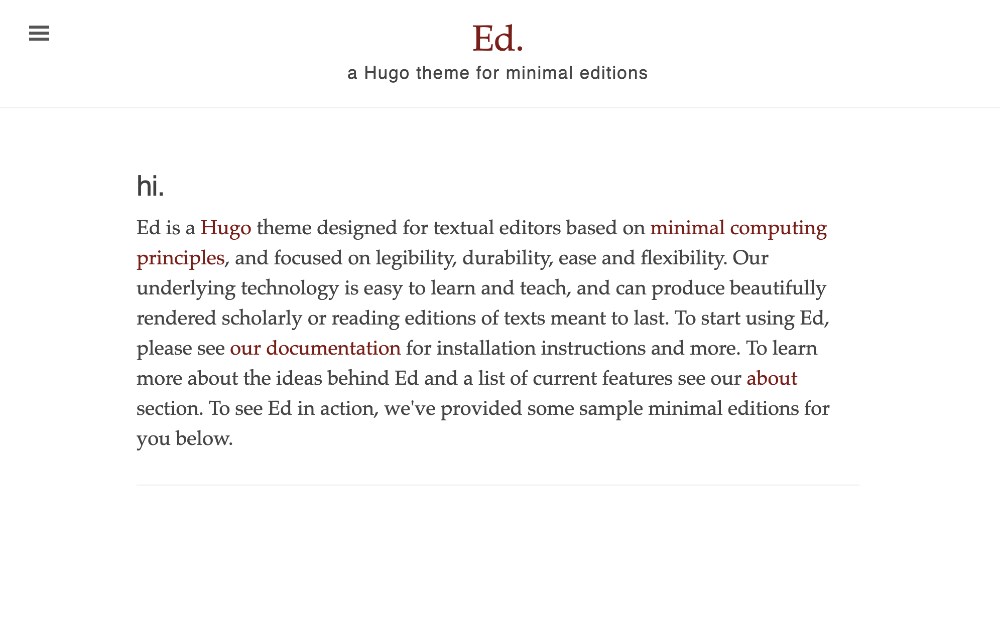

Documentation
Contents
Prerequisites
This documentation was built with beginners in mind, but has the necessary information for more seasoned producers.
To install and use Ed you will be using your terminal. If you need a refresher, I highly recommend “The Command Line Crash Course”. Working knowledge of HTML and CSS is also taken for granted. If you’re new to HTML and CSS, you may want to check out the relevant courses on codecademy.com.
Installing Ed
Before starting, please be sure that you have installed Hugo and created a new site. After that, you are ready to install Ed.
Please note, to install Ed, you must have Go >= 1.12 installed on your computer. You probably have Go already, but if you don’t, the easiest way is probably to install is to follow Go installation instruction. To check if Go is running on your system enter the following line on your terminal (remember to ignore the $):
$ go version
If you don’t get an error, you’re good to go. Using the cd command on your terminal, navigate to the folder where you keep your web projects. Once you’re in the folder where project live, initialize the Hugo Modules system using the following line (replace <your_user> and <your_project> by real names):
Note: If you have already initialized Hugo Modules for your site, you can skip this step.
$ hugo mod init github.com/<your_user>/<your_project>
If you haven’t run this command before, your terminal output should look similar to the following:
go: creating new go.mod: module github.com/<your_user>/<your_project>
go: to add module requirements and sums:
go mod tidy
Take a look inside the exampleSite folder of the Ed theme. You’ll find a file called hugo.toml. Copy this file in the root directory of your Hugo site. After copying, review the contents of this file and adjust the settings according to your project’s needs.
By default, when you copy configuration file to the root of your Hugo site, it should contain the following lines:
[module]
# ...
# there might be additional settings here
# that are not relevant at the moment
# ...
[[module.imports]]
path = 'github.com/sergeyklay/gohugo-theme-ed'
If these lines are missing for some reason, make sure to add them:
[module]
[[module.imports]]
path = 'github.com/sergeyklay/gohugo-theme-ed'
Finally, install Hugo Modules using the following command (remember you can copy and paste):
$ hugo mod get
Your terminal output should look similar to the following:
go: no module dependencies to download
go: downloading github.com/sergeyklay/gohugo-theme-ed v0.8.0
go: added github.com/sergeyklay/gohugo-theme-ed v0.8.0
hugo: downloading modules …
hugo: collected modules in 5342 ms
Getting started
After installing the theme successfully it requires a just a few more steps to get your site running.
If you create a new Hugo project, the content folder is blank by default. You can copy the content folder from exampleSite/content to the project root directory to preview.
To see if Ed is working properly we will take advantage of Hugo’s built in server. You can build the first version of your site and run the Hugo server at the same time by entering:
$ hugo server
Copy the url from your terminal log and paste it into your browser of choice. This url usually looks something like this http://localhost:1313. At this point you should be looking at your very own working version of Ed:

Hugo
Ed is a Hugo theme. That means you will need some familiarity with Hugo to take advantage of its full potential. While running a Hugo site is a bit more involved than Wordpress and other similar tools, the payoff in the long term is worth the effort to learn it. If you are new to Hugo, I recommend you take a look at A Guide to Using Hugo at Strapi, Host on GitHub on Hugo Documentation Site and Hugo's own documentation to start getting a sense of how it works.
Once you have gone through these tutorials, you can get started using Ed. Remember to always and only edit content files for your site using a plain text editor, and not a word processor. I’m composing this file using a plain text editor called Visual Studio Code.
You should make sure that all your texts have the YAML Front Matter (the information at the top of the file). YAML stands for “YAML Ain’t Markup Language” — no disrespect to XML — and it’s the main way that Hugo handles named data. Here’s an example of YAML Front Matter:
---
# Common-Defined params
title: "Cahier d'un retour au pays natal"
draft: true # Is this text a draft?
tags:
- Tag
- "Another tag"
date: 2022-02-01T14:56:58+02:00
lastmod: 2022-05-01T14:56:58+02:00
# Theme-Defined params
author: Aimé Césaire # Author of the text
editor: Alex Gil # Editor of the text
source: Project Guttenberg # The source of the text
rights: Public Domain # Rights for this text
pageTitle: Hello! # The title for the content w/o setting <title> tag
toc: true # Enable Table of Contents for specific page
private: true # Hide text from search engines
semanticType: about # Semantic type of the work (used for Schema.org)
featuredImage: screenshot-home.png # Featured image of the text
annotations: false # Disable annotation via hypothesis on this page
---
For more information about all available standard front matter variables, please read Hugo Front Matter.
Markdown and CommonMark
Ed is designed for scholars and amateur editors who want to produce either a clean reading edition or a scholarly annotated edition of a text. The main language we use to write in the Hugo environment is called Markdown. To learn more about the Markdown family, see Dennis Tenen and Grant Wythoff’s “Sustainable Authorship in Plain Text using Pandoc and Markdown”.
By default, Hugo uses a special Markdown processor called Goldmark. The processor can be said to use it’s own ‘flavor’ of Markdown called CommonMark, and sometimes the Markdown syntax will be different than other flavors of Markdown. CommonMark is a rationalized version of Markdown syntax with a spec whose goal is to remove the ambiguities and inconsistency surrounding the original Markdown specification. It offers a standardized specification that defines the common syntax of the language along with a suite of comprehensive tests to validate Markdown implementations against this specification. You can become familiar with the CommonMark syntax in the CommonMark documentation. Another way to become familiar is to examine the sample text source files we provided.
Genres
Ed offers four different layouts: poem, narrative, drama and simple post. To create content of a certain genre, create a file in the appropriate folder. For example, if you want to create a poem, create a file in the content/poems folder. Another way is to indicated genre in the front matter on your texts. The templates that govern how these genres are displayed can be found in the Ed’s layouts folder. Redefining these layouts in project wide level will allow you to tweak the stylesheets according to your different needs. Out of the box, Ed contains some special instructions for poetry in its stylesheets that allow you to deal with some of the peculiarities of poetry layouts.
To indicate lines in poetry we use the line syntax from Markdown:
- Hold fast to dreams
- For if dreams die
- Life is a broken-winged bird
- That cannot fly.
- Hold fast to dreams
- For when dreams go
- Life is a barren field
- Frozen with snow.
The - at the beginning of each line indicates that these are lines. Another way to achieve the same effect is to use the following syntax:
Hold fast to dreams\
For if dreams die\
Life is a broken-winged bird\
That cannot fly.\
Hold fast to dreams\
For when dreams go\
Life is a barren field\
Frozen with snow.
To indent specific lines we take advantage of Hugo shortcuts that allows us to create empty indentation for a line. This approach still allows the line to be readable while editing.
- {{< indent 3 >}} But O heart! heart! heart!
- {{< indent 4 >}} O the bleeding drops of red,
- {{< indent 5 >}} Where on the deck my Captain lies,
- {{< indent 6 >}} Fallen cold and dead.
or:
{{< indent 3 >}} But O heart! heart! heart!\
{{< indent 4 >}} O the bleeding drops of red,\
{{< indent 5 >}} Where on the deck my Captain lies,\
{{< indent 6 >}} Fallen cold and dead.
The {{< indent 3 >}} is what we need to in order to indicate the indent value for that line. Values can range from 1-10. You can expand the range or adjust the values in the custom stylesheet file. Ed is customized by creating stylesheet files in assets/css/extended/*.css at project wide level.
The example from Raisin in the Sun shows us that we don’t need much special markup for theater as long as we use CAPITAL LETTERS for speakers. Italics for directions are easy enough. Just use * around the words you want to italicize.
Narrative of the Life of Frederick Douglass shows us an example of narrative that includes footnotes and quoted poetry. See the sections below for how to accomplish these different effects.
Configuring Author Selection
Ed offers flexible author management that adapts to both simple and complex content needs. By leveraging Hugo’s templating capabilities and the theme’s configuration structure, you can control how authors are displayed without redundancy. This section explains how to set up author defaults, customize individual posts, and maintain clean frontmatter for your content.
Author Display in Ed
Ed uses the author’s name for displaying attribution on individual post pages, right below the title. This ensures that readers can easily see who wrote the article. Additionally, the author’s name is included in the HTML metadata of each page, such as:
<meta name="author" content="John Doe">
If you prefer not to show the author on your posts, you can disable this feature by adding the following setting to your configuration:
[params]
showAuthor = false
Furthermore, the author is also used in the built-in RSS templates and the feed templates provided by the Ed theme. If the author is defined in the site configuration, it will automatically be included in these feeds, allowing subscribers to see the post’s attribution directly within their feed readers.
Setting a Global Default Author
In many cases, a site has a primary author for the majority of posts. Instead of
specifying the author in every single page’s frontmatter, Ed allows you to
define a global default in your Hugo configuration. To set this up, add the
following snippet to your hugo.toml file:
[params.author]
name = 'John Doe'
email = 'john@example.com'
This snippet registers John Doe as the default author for any post that doesn’t
explicitly specify an author. Now, when your content files omit the author
parameter, Ed will automatically use this global setting.
Overriding the Author per Page
For cases where an individual post has a different author or multiple contributors,
simply include the author parameter in the frontmatter of that page. Ed
supports both single-author and multi-author configurations:
- Single Author: If a post has one unique author, specify it as a string:
--- title: Exploring Hugo date: 2024-09-19T14:08:00+02:00 author: Jane Smith --- - Multiple Authors: For posts with more than one author, use a list of strings:
--- title: Exploring Hugo date: 2024-09-19T14:08:00+02:00 author: - Jane Doe - John Smith ---
Ed will format and display these authors appropriately, using commas to separate the names.
Template Logic and Author Handling
The logic behind this setup is handled in a partial template, ensuring that the theme intelligently selects the correct author value. The template performs the following checks:
- Checks for a Page-Specific Author: If the frontmatter includes the author parameter, it takes precedence. The theme distinguishes between a single string and a list of strings, applying appropriate formatting.
- Falls Back to Global Default: If no author is defined at the page level,
the template falls back to the global value defined in
[params.author]in your configuration file.
This ensures consistent and clean display of author names throughout the site.
Practical Usage Scenarios
- Single Author Blogs: If your site primarily has one author, define the
global default in
hugo.tomland skip specifying the author in individual posts. This reduces redundancy and simplifies the frontmatter structure. - Multi-Author or Guest Posts: For collaborative projects, specify multiple authors directly in the frontmatter. The theme will handle the formatting automatically.
- Guest Posts with Defaults: You can use the global setting for regular posts and specify authors explicitly only for guest contributions, maintaining clarity and reducing manual repetition.
Important Considerations
- Default Fallback: When both the frontmatter and
params.author.nameare empty, Ed will return an empty string, leading to no author being displayed. Always ensure that either the frontmatter or the global configuration is populated. - Email and Other Metadata: While
params.author.emailcan be set globally, the current template logic does not expose email addresses by default. If you wish to include email metadata in your posts, additional adjustments would be required.
Footnotes
Footnotes are the bread and butter of scholarship. Hugo makes footnotes a fairly simple affair:
- O Captain! my Captain! rise up and hear the bells;
- Rise up—for you the flag is flung—for you the bugle[^1] trills,
...
[^1]: The bugle is a small trumpet implicated in the military industrial complex.
These footnotes can be placed anywhere, but they will always be generated at the bottom of the document. To have a multi-paragraph footnote you need to start the footnote text on the next line after the footnote anchor and indent it:
[^1]: Ugh pinterest fixie cronut pitchfork beard. Literally deep
cold-pressed distillery pabst austin.
Typewriter 90's roof party poutine, kickstarter raw
denim pabst readymade biodiesel umami chicharrones XOXO.
Please note, you need to indent all lines at the same level to make them stay inside the footnote.
At the moment (May 2022) time the footnotes system provided by Hugo does have one limitation: It does not support non-numbered footnotes, and it only allows you to have one set of footnotes for a text. In some cases we have to separate the author’s footnotes from our own, in others we want to represent the author’s own footnote style. In these cases we have to use custom Ed’s shortcode for footnotes. Here’s the example from Narrative of the Life:
... At this time, Anna,{{< footnote "fn2" >}} my intended wife, came on;
...
{{< footnotesList >}}
...
{{< citation "fn2" "She was free." >}}
...
{{< /footnotesList >}}
Blockquote
Narrative of the Life also includes several blockquote elements. You can also find another example of blockquote use in the footnote of “O Captain! My Captain!” Simple blockquote are simple enough in Markdown:
> This is to certify that I, the undersigned, have given the bearer, my servant, full liberty to go to Baltimore, and spend the Easter holidays.
>
> Written with mine own hand, &c., 1835.
> WILLIAM HAMILTON,
To use a line break in block elements add two spaces after the end of the line where you want the break. You can’t see them after &c., 1835. but they are there.
Things get a bit complicated when we want to use poetry inside the block or when the block is included in another block element, like a footnote. Here’s the last two stanzas from “A Parody” in Narrative of the Life, which shows an example of a blockquote of poetry:
...
> - Two others oped their iron jaws,
> - And waved their children-stealing paws;
> - There sat their children in gewgaws;
> - By stinting negroes' backs and maws,
> - They kept up heavenly union.
{.poetry}
> - All good from Jack another takes,
> - And entertains their flirts and rakes,
> - Who dress as sleek as glossy snakes,
> - And cram their mouths with sweetened cakes;
> - And this goes down for union.
{.poetry}
The {.poetry} tag at the end tells the processor to think of the lines above it as poetry. The {.poetry} tag is an example of Goldmark class assignments for block-elements. Because this segment of poetry exists in the ’narrative’ layout, and because it is part of a blockquote, we need to signal to the processor to process poetry this way, so that the right class is invoked in the stylesheet. The good news is this is the most complex Goldmark syntax layout you will encounter in Ed.
Pages
Your editions are treated as sections or page bundles in Ed. Other web pages in your site exist outside the content folder. Default homepage, for example, is constructed from the index.html file found on the layouts folder of Ed theme.
You will notice that the homepage in particular has a .html file ending instead of a .md ending. All template files in Hugo are HTML, and the index behaves as a template file. Although these files are mostly written in HTML, notice that they may contain template tags. To create your own homepage create index.html file in project layouts folder, making sure that your changes to index.html are written in valid HTML. The same goes for all Ed’s template files in the layouts folder.
Tables of Content
You will find three kinds of Tables of Content in Ed. The first example is in the list of Latest Publications in the Homepage. This list is generated using the templating language. This is one of the major components of Hugo, and I recommend you deepen your knowledge of it if you want to modify the logic that automates much of Ed. Here is the code that generates the Latest Publications list on the homepage:
<div class="toc">
<h2>Latest Publications</h2>
<ul class="texts">
{{ range first 10 (where site.RegularPages.ByDate.Reverse "Type" "in" site.Params.mainSections) }}
<li class="text-title">
<a href="{{ .Permalink }}">{{ .Title }}</a>
</li>
{{ end }}
</ul>
</div>
To override this list, create file mini-toc.html inside layouts/partials folder.
As you can see, the templating tags {{ }} are embedded into the HTML. These tags often use programmatic logic, as is the case here. However, another use of these tags is pull data from your project. In the example above it pulls the Title from each allowed post type.
As you may have noticed already, we are basically adapting the blogging features of Hugo to our own ends, what Cuban designer and theorist Ernesto Oroza would call “technological disobedience”.
The second kind of table of content is exemplified in this documentation. If you open the source file for the documentation, you will notice at the top this snippet:
{{< toc >}}
This is the Hugo way. The shortcode, {{< toc >}} tells the processor to create a table of contents based on headers in the document. You can use this syntax in any page on the site that uses headers.
The third way is simple as the previous one, but very useful for long texts. If we enable the table of contents in the front matter of a page:
toc: true
Ed will activate the optional table of content sidebar (layouts/partials/sidebar-toc.html in Ed) and move the table of contents to a special sidebar for that page. Narrative of the Life uses this method for its table of content.
The internal links pointing to the right sections in your document are generated from the title names automatically. If you can figure out how Ed accomplishes this trick, you have graduated from the Ed school of minimal editions.
Styling Theme
To change the main color accents of the theme, such as the headers, links, and text logo, you can use the colorScheme configuration parameter, as shown below:
[params]
colorScheme = 'magenta'
The currently supported colors are: red, orange, magenta, cyan, blue, and brown.
If no value is provided, or if you remove the colorScheme parameter altogether, the theme defaults to red.
At the moment, the theme does not support arbitrary changes to fonts, custom colors, or other visual elements beyond those predefined by the theme. However, the theme provides a way for you to add your own custom styles to your project.
To do this, create a layouts/partials directory in your project, and inside it, add a file named custom-head.html. You can now define any custom styles within this file. For example:
<style>
html {
font-family: "PT Sans", Helvetica, Arial, sans-serif;
}
</style>
This allows you to override or extend the theme’s default styles with your own customizations.
Comments
Ed theme now supports adding a comments system to your site, enhancing interactive engagement. Currently, the theme supports integration with giscus.
giscus is a comments system powered by GitHub Discussions. It leverages GitHub’s infrastructure to provide a free, open source platform for comments.
giscus operates by linking your website’s comment section directly to GitHub Discussions. Here’s an overview of the process:
- When a page with giscus integration loads, it uses the GitHub Discussions search API to locate a discussion that matches the page. The association is determined based on a chosen mapping strategy such as URL, pathname, or the page’s
<title>. - If no existing discussion matches the page, giscus is configured to automatically create a new discussion when a visitor posts the first comment or reaction. This ensures that each page can have its own dedicated discussion thread, even if one was not previously set up manually.
- To post a comment, visitors must authorize the giscus application via the GitHub OAuth flow, which grants the app permission to post comments on their behalf. This authorization is a straightforward process, typically requiring just a few clicks to connect a GitHub account.
- Alternatively, visitors can choose to comment directly within the GitHub Discussions platform. This flexibility allows users familiar with GitHub to engage in the discussion using an interface they are comfortable with.
- All comments posted through giscus are hosted and moderated on GitHub, leveraging GitHub’s native tools for managing discussions. This integration allows site owners to manage comments using the same workflows they use for other GitHub activities, providing a seamless moderation experience.
Integrating giscus not only activates the dynamic interaction capabilities of GitHub Discussions on your Hugo site but also simplifies the management of user comments and engagements.
To enable giscus in your Hugo site, you must first add configuration settings in the site’s configuration file. Below is a template for setting up giscus, which includes enabling the system and specifying necessary identifiers that link your site with the giscus service:
To enable giscus, you need to add the following to the site configuration file:
[params]
[params.comments]
enable = false # Set to true to enable comments globally
type = 'giscus'
[params.comments.giscus]
# Required parameters:
# Replace with your repository
repo = 'your-github-username/repository-name'
# Repository ID from giscus setup
repoId = 'repository-ID'
# Discussion category
category = 'Announcements'
# Category ID from giscus setup
categoryId = 'category-ID'
# Optional parameters:
#
# ...
You can obtain the repoId and categoryId by configuring your repository on the giscus setup page. More details can also be found there.
Comment Configuration for Content Types
In the Ed theme, comments are disabled by default for all content types to maintain simplicity and focus for users. This includes all posts (poems, narratives, dramas, and blog posts) and pages. This setting helps ensure that comments are only enabled where they are explicitly needed, allowing for more granular control over site interactions.
# Default site configuration to disable comments globally
[params]
[params.comments]
enable = false
# ...
If you wish to enable comments on specific posts to encourage community interaction, you can override the default setting in the front matter of each post:
# Example of enabling comments in the front matter of a post
---
title: Exploring Narratives
comments: true
---
This allows you to selectively activate comments on content that benefits from user engagement, such as articles, stories, and discussions.
For sites where community feedback is integral across all posts, comments can be enabled globally through the site’s configuration file:
# Enable comments globally in site configuration
[params]
[params.comments]
enable = true
# ...
This setting will activate comments for all posts but will not affect pages, as comments on pages are not supported. This approach is consistent with the theme’s design to keep static pages like “About” and “Contact” free from comments, ensuring these pages remain streamlined and professional.
Styling Comments
By default, giscus will inherit the styling from your GitHub discussion forum. However, you can customize the appearance to better fit your site’s design by specifying a theme parameter in the giscus configuration block:
[params]
[params.comments]
# ...
[params.comments.giscus]
# Required parameters:
#
# ...
# Optional parameters:
# Available themes: cobalt, dark, light, dark, purge, etc.
theme = 'dark_dimmed'
Refer to the giscus theme documentation for more details on available themes.
Localization
giscus supports multiple languages, and you can set the desired language for your comments section through the lang parameter:
[params]
[params.comments]
# ...
[params.comments.giscus]
# Required parameters:
#
# ...
# Optional parameters:
# Use language codes like 'en' for English, 'es' for Spanish, etc.
lang = 'fr'
This enhancement to the Ed theme allows you to leverage the power of community discussions directly on your site, making it more dynamic and engaging for visitors.
For more information on giscus, visit the giscus website.
Integrating Analytics with Ed
Ed provides seamless integration options to harness the power of Google Analytics and Google Tag Manager, ensuring you can monitor the performance and user engagement of your site effortlessly. To activate these services, a few configurations must be set up within your Hugo project’s configuration file. This section guides you through the process, highlighting the nuances and preferences within Ed’s theme.
Setting Up Google Analytics
To enable Google Analytics, you first need to obtain your tracking ID from the Google Analytics dashboard. Once you have it, add the following to your configuration file:
[services]
[services.googleAnalytics]
ID = 'G-MEASUREMENT_ID'
This snippet tells Hugo to include the Google Analytics tracking code in your site. However, merely providing the ID is not enough. You must also explicitly enable Google Analytics by modifying the privacy settings:
[privacy]
[privacy.googleAnalytics]
disable = false
For a more privacy-conscious implementation, you can configure Ed to respect users’ “Do Not Track” browser settings. This ensures that visitors who prefer not to be tracked are excluded from analytics data:
[privacy]
[privacy.googleAnalytics]
disable = false
respectDoNotTrack = true
When respectDoNotTrack is set to true, Ed will honor the user’s preference, making your site more respectful of user privacy choices.
Configuring Google Tag Manager
If you prefer to use Google Tag Manager instead of Google Analytics, Ed has built-in support for it as well. Google Tag Manager offers more flexibility, allowing you to manage various tags — such as conversion tracking, remarketing, and more — through a single platform.
To configure Google Tag Manager, add your container ID in the following format:
[params]
[params.services]
[params.services.googleTagManager]
id = 'GTM-MEASUREMENT_ID'
As with Google Analytics, simply adding the ID does not enable tracking by itself. You must adjust the corresponding privacy settings to activate it:
[params]
[params.privacy]
[params.privacy.googleTagManager]
disable = false
respectDoNotTrack = true
Here, setting disable to false activates Google Tag Manager, while the respectDoNotTrack option enables the same privacy-conscious behavior as described for Google Analytics.
Important Considerations
- Mutual Exclusivity of Services: Ed only supports activating either Google Analytics or Google Tag Manager, but not both simultaneously. This is by design — Google Tag Manager, when enabled, forwards data to Google Analytics internally. Therefore, enabling both services would result in redundant tracking and could potentially skew your metrics.
- Configuration File Locations: Note that the configuration structures differ slightly:
- Google Analytics settings reside under the root configuration sections.
- Google Tag Manager settings are nested within the
[params]section of your configuration file.
When both configurations are present, Ed prioritizes Google Tag Manager, bypassing the Google Analytics settings entirely. This makes your setup simpler and more robust, avoiding conflicting tracking scripts.
Making the Choice
So, which should you choose? It depends on your needs:
- Google Analytics is ideal for straightforward tracking and reporting without additional complexity.
- Google Tag Manager is recommended if you need advanced tag management, custom events, or multiple analytics integrations.
When you decide, set up the configurations accordingly and let Ed handle the rest.
Getting help
That should do it. If you have suggestions on how to improve Ed, make sure to leave us a line on our issues page, or send us a pull request. If you run into an issue that isn’t answered by this documentation or the exampleSite, then visit the Hugo forum. The folks there are helpful and friendly. Before asking your question, be sure to read the requesting help guidelines. Feel free to tag me in your question, my forum username is @egrep.
Happy editing!
Serghei Iakovlev
April 2024
Alex Gil
April 2016